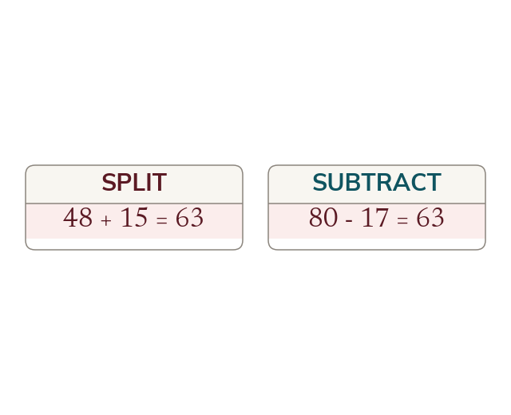

Two routes to the same area
Add the pieces, or subtract a piece from a surrounding shape. Both give the same area, so choose the route with fewer unknown lengths.
A compound shape is handled by turning it into shapes that already have formulas, and there are always two ways to do that. It can be split into pieces whose areas are added, or it can be seen as a larger surrounding shape with a piece taken away. Both are correct and both give the same total, because area does not depend on how a figure is cut up. Choosing between them is a practical decision: the better route is the one that needs fewer unknown lengths to be worked out first. Doing it both ways is also the cheapest check available, since two independent routes agreeing is strong evidence and two routes disagreeing locates the error.